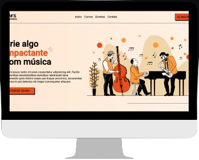

Olá sou Guilherme Macedo
Desenvolvedor Web, focado em criar sites e sistemas.
Prazer sou Guilherme, sou um jovem programador que ama programar, buscando sempre desenvolver aplicações e sistemas para melhor acessibilidade do usuário.
Coding


Aqui estão as tecnologias em que tenho um conhecimento sólido.
Comunicação
Uma das coisas que gosto bastante é de socializar, conhecer novas amizades e trocar conhecimentos
Equipe
Gosto muito de trabalhar em aquipe ainda mais na programação, por que acredito que o pensamento e a criatividade de uma equipe, se desenvolve um ótimo trabalho.
Abaixo estão alguns trabalhos e projetos em que desenvolvi. Veja mais no meu GitHub

A Tom´s Scholl é uma escola de Jazz fictícia, confira esta Landing Page magnífica, apresentando minhas habilidades em estilização.